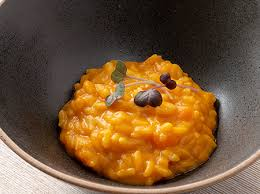

Risotto de carbassa
Ingredients
- Carbassa
- Arròs
- Formatge parmesà
- Ceba
- All
Temps
Preparació: 15 minuts | Cocció: 30 minuts
Passos
- Talla la carbassa a daus.
- Sofregeix la ceba i l'all en oli d'oliva.
- Afegeix l'arròs i la carbassa, i cuina amb brou.
Preparació: 15 minuts | Cocció: 30 minuts